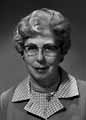
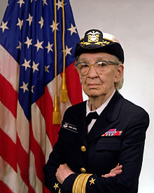

Ada Byron, Lady Lovelace, was one of the most picturesque
characters in computer history. August Ada Byron was born
December 10, 1815 the daughter of the illustrious poet, Lord
Byron. Five weeks after Ada was born Lady Byron asked for a
separation from Lord Byron, and was awarded sole custody of Ada
who she brought up to be a mathematician and scientist. Lady
Byron was terrified that Ada might end up being a poet like her
father. Despite Lady Byron's programming Ada did not sublimate
her poetical inclinations. She hoped to be "an analyst and a
metaphysician". In her 30's she wrote her mother, if you can't
give me poetry, can't you give me "poetical science?" Her
understanding of mathematics was laced with imagination, and
described in metaphors.
Chiefly known for her work on Charles Babbage's early mechanical
general-purpose computer, the Analytical Engine (AKA "The
Difference Engine"). Her notes on the engine include what is
recognized as the first algorithm intended to be carried out by
a machine. As a result, she is often regarded as the first
computer programmer.

Fox graduated from Wisconsin State College in 1940. She joined
the U.S. Naval Reserve in 1943 and was stationed at the Naval
Research Station in Washington. She continued to work there as
an electronics engineer in radar after her discharge in 1946. In
1951 she joined the National Bureau of Standards as a member of
the technical staff of the Electronic Computer Laboratory.
Later, she joined the Research Information Center and Advisory
Service on Information Processing (RICASIP) where she was
involved in producing reviews and bibliographies. From 1966 to
1975 Fox was chief of the Office of Computer Information in the
NBS Institute for Computer Science and Technology.
Fox was involved in several professional groups, especially the
Association for Computing Machinery (ACM), and the American
Federation for Information Processing Societies (AFIPS). She was
the first secretary of AFIPS."
Quoted from: Margaret Fox Papers (CBI 45), Charles Babbage
Institute, University of Minnesota, Minneapolis.

Grace Brewster Murray Hopper was an American computer scientist
and United States Navy Rear Admiral. She was one of the first
programmers of the Harvard Mark I computer in 1944, invented the
first compiler for a computer programming language, and was one
of those who popularized the idea of machine-independent
programming languages which led to the development of COBOL,
one of the first high-level programming languages.
Owing to her accomplishments and her naval rank, she is sometimes
referred to as "Amazing Grace". The U.S. Navy Arleigh Burke
class guided-missile destroyer USS Hopper (DDG-70) is named for
her, as is the Cray XE6 "Hopper" supercomputer at NERSC.
During the early 1940's, Kay McNulty, a recent math graduate from
Chestnut Hill College, was employed along with about 75 other young
female mathematicians as a "computer" by the University of
Pennsylvania's Moore School of Engineering. These "computers" were
responsible for making calculations for tables of firing and
bombing trajectories, as part of the war effort. The need to perform
the calculations more quickly prompted the development of the ENIAC,
the world's first electronic digital computer, in 1946.
Kay McNulty Mauchly Antonelli recalls computing in 1946:
"We did have desk calculators at that time, mechanical and driven with
electric motors, that could do simple arithmetic.
You'd do a multiplication and when the answer appeared, you
had to write it down to reenter it into the machine to do the next
calculation. We were preparing a firing table for each gun, with maybe
1,800 simple trajectories. To hand-compute just one of these
trajectories took 30 or 40 hours of sitting at a desk with paper and a
calculator. As you can imagine, they were soon running out of young
women to do the calculations. Actually, my title working for the
ballistics project was `computer.' The idea was that I not only did
arithmetic but also made the decision on what to do next.
ENIAC made me, one of the first `computers,' obsolete.
On computing in 1996, Kay says:
I love that it's a perfectly normal thing for kids. My
5-year-old granddaughter is not amazed by computers at all. I guess
the amazement will come when she realizes it won't do everything in
the world.
At the beginning of World War II, Lamarr and composer George
Antheil developed a radio guidance system for Allied torpedoes,
which used spread spectrum and frequency hopping technology to
defeat the threat of jamming by the Axis powers. Though the
US Navy did not adopt the technology until the 1960s, the
principles of their work are now incorporated into modern GPS,
Wi-Fi, CDMA and Bluetooth technology,and this work led to their
being inducted into the National Inventors Hall of Fame in 2014.